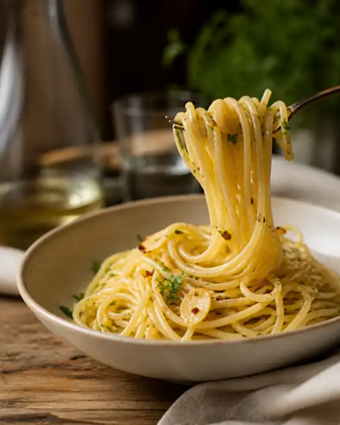
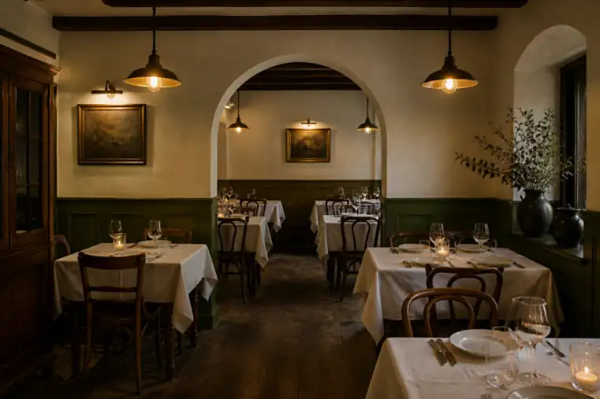
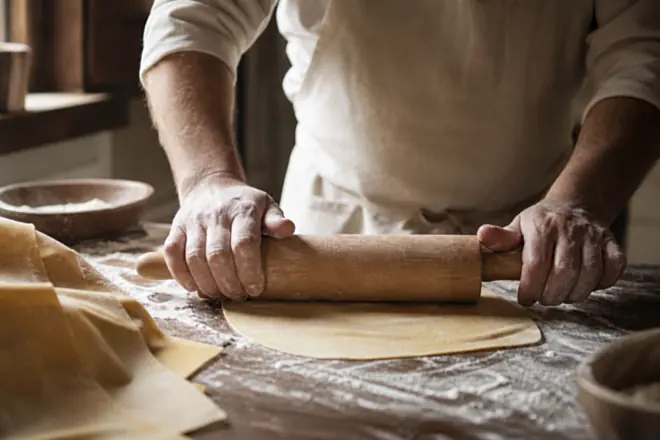
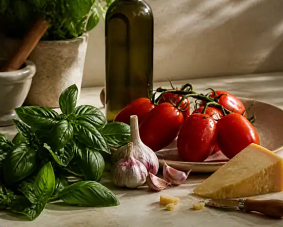
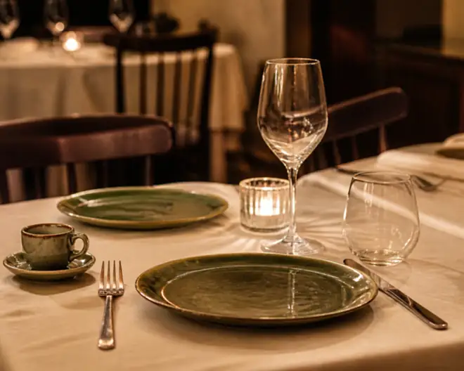
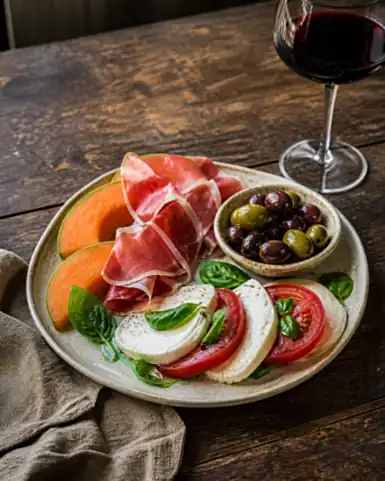
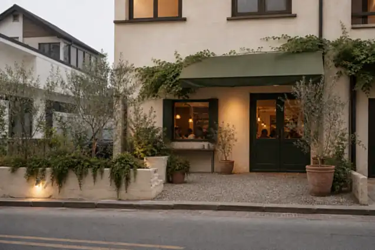

Trattoria · Yangju · Since 2000
2000년부터,
같은 자리에서
같은 불로.
양주 삼숭동에서 이십 년 넘게 이어온 이탈리안 다이닝. 화려한 요리보다 매일 같은 맛을 지키는 일에 오래 마음을 써 왔습니다.

Dal 2000한 자리에서 이어진 시간
단골이 아이를 데리고 다시 오고, 그 아이가 어른이 되어 같은 테이블에 앉는 식당. 까사338이 오래 해 온 일입니다.
처음 문을 연 것은 2000년입니다. 그때부터 지금까지 이 자리를 지켰습니다. 유행하는 요리를 좇기보다, 손에 익은 반죽과 매일 같은 온도의 오븐을 믿었습니다.
토마토와 올리브유, 바질과 마늘. 재료는 단순하지만 고르는 일에는 시간을 들입니다. 파스타는 주문이 들어오면 그때 삶고, 피자는 반죽의 상태를 보고 불에 올립니다.
가족 모임, 조용한 저녁, 오래된 친구와의 식사. 오늘도 같은 자리에서 같은 불로 손님을 맞습니다.
“매일 같은 맛이 가장 어려운 요리입니다.”



프라이빗 룸과 테이블
4인부터 12인까지, 문을 닫고 식사할 수 있는 룸이 있습니다. 가족 모임과 조용한 저녁을 위해 준비된 자리입니다.

홀과 분리된 룸은 대화가 오가는 저녁에 어울립니다. 테이블 간격을 넉넉히 두어 옆자리 목소리가 섞이지 않습니다. 단체석과 유아 의자도 준비되어 있습니다.
| 프라이빗 룸 | 4인 – 12인 |
|---|---|
| 단체석 | 가능 · 전화 협의 |
| 유아 의자 | 준비되어 있음 |
| 콜키지 | 가능 |
| 주차 | 전용 주차장 |
룸 사용과 단체 예약은 전화로 문의해 주세요. 주말 예약은 받지 않습니다.
접시와 공간의 기록
파스타, 피자, 프라이빗 룸. 인스타그램에 올라온 소재를 따라 여덟 장으로 정리했습니다.


위 이미지는 인스타그램(@casa338.love)의 파스타·피자·공간 소재를 참고해 제작한 예시 이미지입니다. 실제 제작 시 매장 사진으로 교체됩니다.
이용 안내
처음 오시는 분들이 가장 많이 물으시는 것들입니다.
오시는 길
Casa 338
경기도 양주시 삼숭로58번길 57 (삼숭동 338-1)
전용 주차장 · 프라이빗 룸 4~12인
| 영업시간 | 11:30 – 21:00 (LO 20:00) |
|---|---|
| 휴무 | 매주 화요일 |
| 주차 | 전용 주차장 |
| 인스타그램 | @casa338.love |
지도 영역 — 실제 제작 시 카카오맵으로 연동됩니다